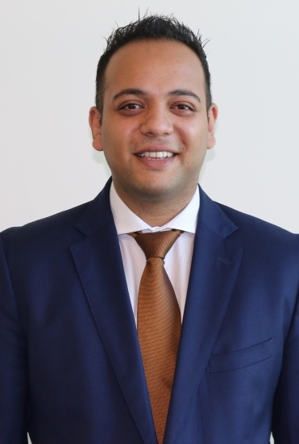

Marvin Castelino
Learning & Development Specialist | Instructional Designer | UI/UX | Digital Designer | Web Developer

SUMMARY
I'm a highly accomplished Digital Learning and Development Specialist with a successful 15-year track record. My
expertise lies in designing, developing, and implementing innovative digital learning content solutions,
resulting in optimal training processes, cost reduction, and heightened learner engagement. I am recognized for
my ability to align training initiatives with organizational goals, driving quantifiable performance
improvements and leading technical innovations.
KEY COMPETENCIES
- Instructional Design
- Learning Management Systems
- Content Design and Development
- UI/UX Experience Design
- Project Management
- Responsive Design
- Feedback and Data Analytics
- Industry Trends and Research Experiment
WORK EXPERIENCE
PureHealth, Dubai
Instructional Designer Specialist - Learning and Development Team - Oct 2022 - Oct 2023
- Designed e-learning courses that increased employee engagement by 25% and improved project success rates
by 15%, incorporating responsive design for optimal user experience.
- Developed comprehensive training programs, resulting in a remarkable 95% learner satisfaction rate,
supported by extensive research and innovation.
- Managed L&D projects effectively, leading teams of executives and interns while optimising technical
specifications.
- Successfully implemented a Learning Management System (LMS) and trained employees on its functionality,
incorporating technical optimization and responsive design.
- Translated Learning Needs Analysis for 24,000 employees into a productive learning calendar, keeping
pace with industry trends.
- Utilised Power BI data analytics to maximise measurable Learning ROI and Learning KPIs through
innovative content creation.
- Collaborate with internal and external trainers for creating diverse learning content development,
driven by industry trends and innovative approaches.
- Drafted and implemented an L&D policy in line with current SOPs, prioritising innovation, responsive
design, and user feedback.
- Facilitated discussions and collaboration via the company's app, fostering a culture of continuous
learning and collaborative innovation.
Emirates Airlines, Dubai
Digital - Training Specialist - Sep 2012 - Sep 2020
- Received 5 prestigious Najm Awards, highlighting outstanding contributions and achievements that
significantly enhanced the organisation and incorporated industry trends.
- Delivered structured and results-oriented learning experiences for 10,000 cabin crew, ensuring measurable
improvements in knowledge acquisition and practical skills application through technical specifications.
- Conducted systematic training needs assessments, leading to substantial enhancements in the training
curriculum and outcomes, driven by research and collaborative innovation.
- Generated cost savings by creating responsive digital content for the Learning Management System (LMS),
resulting in budget reductions, optimization, and recognition for cost reduction.
- Continually evaluated and fine-tuned training programs, ensuring alignment with evolving organisational
needs, industry best practices, and innovation.
- Efficiently onboarded new hires, reducing time to full productivity and boosting operational efficiency
through technical optimization and responsive design.
- Rigorously assessed training effectiveness, leading to visible increases in employee performance and
productivity through analytics and experimental methods.
- Spearheaded innovative instructional design and successfully implemented 15 diverse training programs,
improving training materials and learner engagement, with a focus on technical specifications and
collaborative innovation.
EDUCATION & CERTIFICATION
- Bachelor of Science in Computer Information Systems, Champlain University, Vermont, USA, Jul 2005
- Train The Trainer, Emirates Aviation College, Mar 2009
- Supervisory Leadership Essentials - Emirates Aviation College
- Foundations of Personal Leadership - Emirates Aviation College
- eLearning - Storyboarding - LinkedIn
- User Interface/User Experience for Web Design - NIIT
EXPERIENCED KEY SKILLS
Others